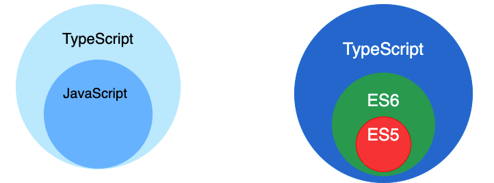
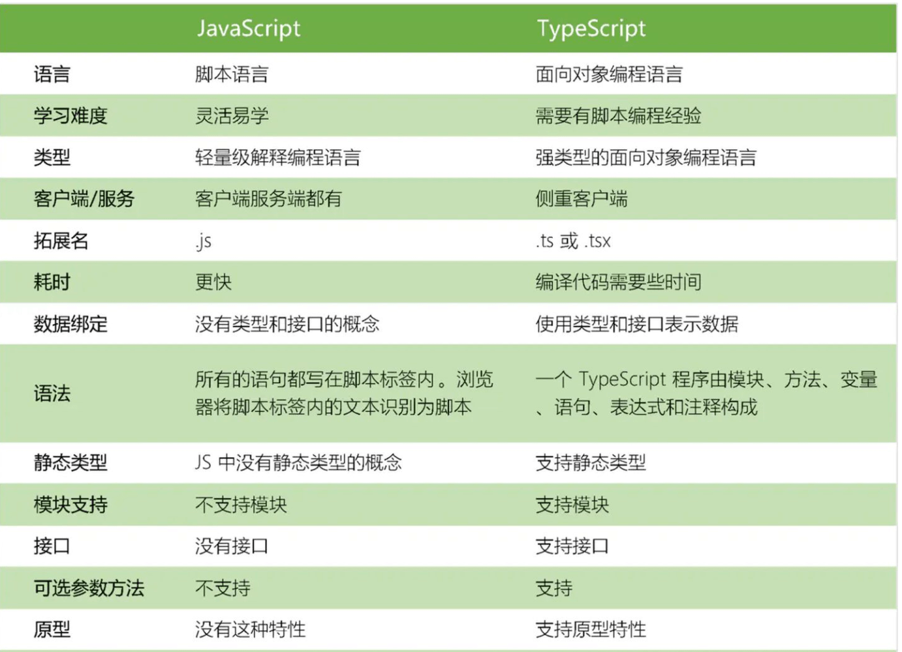

说说你对 typescript 的理解？与 javascript 的区别？
参考答案
一、是什么
TypeScript 是 JavaScript 的类型的超集，支持ES6语法，支持面向对象编程的概念，如类、接口、继承、泛型等
超集，不得不说另外一个概念，子集，怎么理解这两个呢，举个例子，如果一个集合A里面的的所有元素集合B里面都存在，那么我们可以理解集合B是集合A的超集，集合A为集合B的子集

其是一种静态类型检查的语言，提供了类型注解，在代码编译阶段就可以检查出数据类型的错误
同时扩展了 JavaScript 的语法，所以任何现有的 JavaScript 程序可以不加改变的在 TypeScript 下工作
为了保证兼容性，typescript在编译阶段需要编译器编译成纯Javascript来运行，是为大型应用之开发而设计的语言，如下：
tsx文件如下：
const hello : string = "Hello World!"
console.log(hello)编译文件后：
const hello = "Hello World!"
console.log(hello)二、特性
typescript的特性主要有如下：
- 类型批注和编译时类型检查 ：在编译时批注变量类型
- 类型推断：ts中没有批注变量类型会自动推断变量的类型
- 类型擦除：在编译过程中批注的内容和接口会在运行时利用工具擦除
- 接口：ts中用接口来定义对象类型
- 枚举：用于取值被限定在一定范围内的场景
- Mixin：可以接受任意类型的值
- 泛型编程：写代码时使用一些以后才指定的类型
- 名字空间：名字只在该区域内有效，其他区域可重复使用该名字而不冲突
- 元组：元组合并了不同类型的对象，相当于一个可以装不同类型数据的数组
- ...
类型批注
通过类型批注提供在编译时启动类型检查的静态类型，这是可选的，而且可以忽略而使用JavaScript常规的动态类型
function Add(left: number, right: number): number {
return left + right;
}对于基本类型的批注是number、bool和string，而弱或动态类型的结构则是any类型
类型推断
当类型没有给出时，TypeScript编译器利用类型推断来推断类型，如下：
let str = 'string'变量str被推断为字符串类型，这种推断发生在初始化变量和成员，设置默认参数值和决定函数返回值时
如果由于缺乏声明而不能推断出类型，那么它的类型被视作默认的动态any类型
接口
接口简单来说就是用来描述对象的类型 数据的类型有number、 null、 string等数据格式，对象的类型就是用接口来描述的
interface Person {
name: string;
age: number;
}
let tom: Person = {
name: 'Tom',
age: 25
};三、区别
- TypeScript 是 JavaScript 的超集，扩展了 JavaScript 的语法
- TypeScript 可处理已有的 JavaScript 代码，并只对其中的 TypeScript 代码进行编译
- TypeScript 文件的后缀名 .ts （.ts，.tsx，.dts），JavaScript 文件是 .js
- 在编写 TypeScript 的文件的时候就会自动编译成 js 文件
更多的区别如下图所示：

作答思路：
TypeScript是JavaScript的一个超集，它添加了静态类型检查和一些其他特性。与JavaScript的区别主要在于：
- 静态类型：
- TypeScript提供了类型检查，这意味着在开发过程中可以捕获潜在的错误。
- JavaScript是动态类型，类型在运行时确定。
- 模块化：
- TypeScript支持模块化编程，允许将代码组织成模块，并使用
import和export来共享代码。 - JavaScript模块化是通过CommonJS、AMD或ES6模块系统实现的。
- 泛型：
- TypeScript支持泛型，这允许你创建可重用的组件，这些组件可以处理多种数据类型。
- JavaScript没有原生的泛型支持，但可以使用第三方库如TypeScript来实现。
- 接口和类型：
- TypeScript提供了丰富的类型系统，包括接口（Interface）、类（Class）等。
- JavaScript的类型系统相对简单，主要依赖于原型链和
typeof操作符。
- 编译为JavaScript：
- TypeScript需要编译为JavaScript才能在浏览器或Node.js中运行。
- JavaScript是直接运行的。
考察要点：
- TypeScript概念：理解TypeScript的基本原理和用途。
- 与JavaScript的区别：了解TypeScript与JavaScript在类型系统、模块化、泛型等方面的区别。